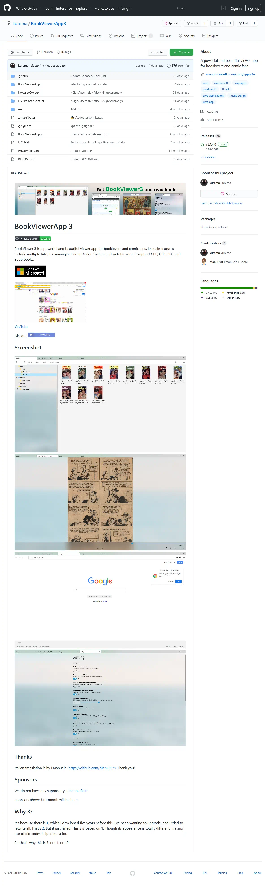

Read books on Windows 10
読書をするならWindows 10が圧倒的！
それはこのアプリがあるからです。
UWPの力を最大限活かした最高のアプリがここに。

BookViewer 3 is the best way to read novels, document, comics and mangas.
Explore the folder, combine into a library, open books, and browse the book stores.
It's open source which means good.
読書をするならWindows 10が圧倒的！
それはこのアプリがあるからです。
UWPの力を最大限活かした最高のアプリがここに。
Do you have PDF, CBZ or CBR books? Then read it now!
Sync your bookmarks and continue reading on any of your Windows 10 devices.
Set the orientation, spread and others as you like.
ブラウザもファイラーもビュワーも、自由自在にタブを切り替え。
複数の本やサイトを同時に開けます。
別のウィンドウに分割することだってできます。
標準ビュワーに加え、EPUBビュワーを内蔵しました。
高評価の国産ビュワーBibiの他、Epub.js Readerも搭載し、設定から選択できます。
Explorerや内蔵ファイラーから簡単にEPUBファイルを開けます。
お気に入りのフォルダを登録、複数のフォルダをまとめてライブラリにしましょう。
Windows Explorerに近い直観的操作。
ブックマークも履歴も参照できます。
一度開いた本にはサムネイルが表示されるので一目瞭然です。

ローカルの書籍だけでなく、ストアの本も読みましょう。
全ての読書体験をアプリ一つで。
ダウンロードした本をアプリ内で直接開けます。
BookViewer 3 is developed with open source. It is free to fork, pull requests, and sponsorship agreements. Let's star it first.
BookViewer 3 is totally free, with no ads or paid features.
Your support help us develop.
Support is available through in-app purchases, GitHub Sponsors, Kindle books, Wishlist, and affiliates. Stars and followers are also welcome.